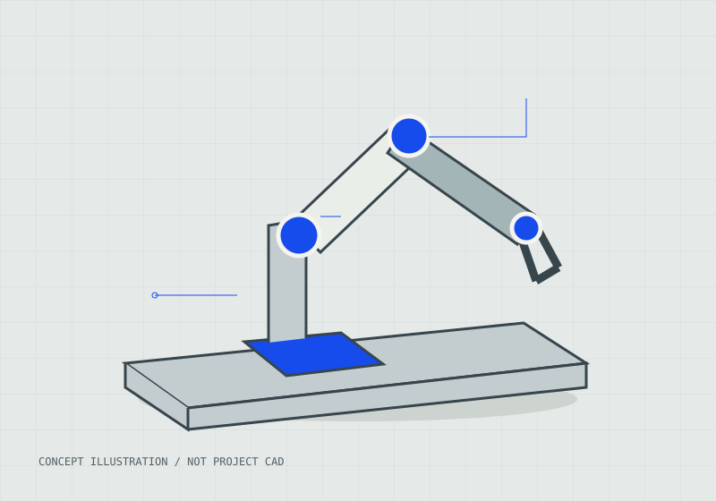
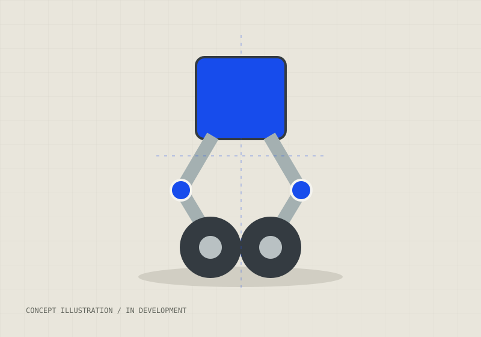
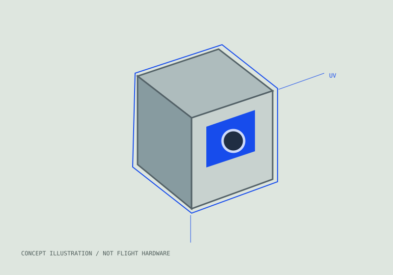
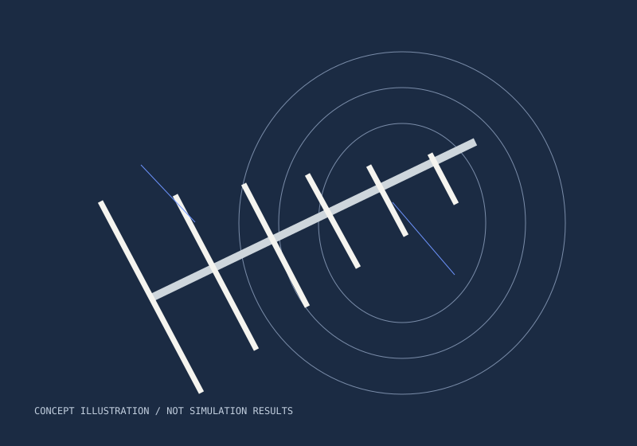

Built on curiosity.
Completed work and ongoing development, with clear roles, constraints, and design decisions.
4 projects shown

Academic projectTwo-axis robotic arm
A robotic arm on a belt-driven linear slide, built to move a tennis ball and place it in a target box.

In developmentTwo-wheeled biped
An ongoing exploration of leg geometry, actuator selection, and balancing control for a compact wheel-legged robot.

Program workCubeSat UV payload
Payload planning for a UV spectrometer in the AIAA CubeSat program.

Internship projectYagi–Uda antenna
A simulation study exploring antenna directivity for satellite communications.
Project visuals are concept illustrations. Actual photos, CAD, and results will be added.